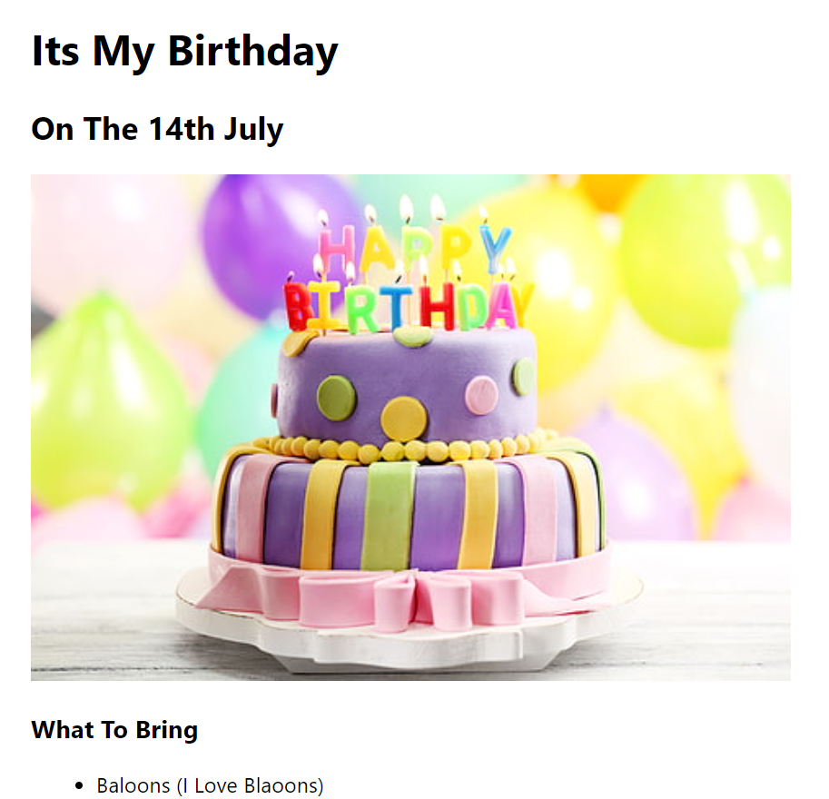

<!-- TODO 1: Create the HTML Boilerplate -->
<!DOCTYPE html>
<html lang="en">
    <div style="background-color: azure;">
<head>
    <meta charset="UTF-8">
    <title style="font-family: Cambria, Cochin, Georgia, Times, 'Times New Roman', serif;">Kumara's Portofolio</title>
    <h1 style="color: maroon;">Kumara's Portofolio</h1>
    
    <hr>

    <h2 style="color: maroon;">Summary</h2>
    <p>I am an active student of Universitas Pembangunan Nasional "Veteran" Jakarta</p>
</head>
<hr>

<body>

    <div style="font-family: Cambria, Cochin, Georgia, Times, 'Times New Roman', serif;">
    <h3><a href="./public/movie-ranking.html">Movie Ranking Project</a></h3>
    </div>
    

    <div>
        <h3><a href="./public/birthday-invite.html">Birthday Invitation</a></h3>
    </div>
    
</body>
<hr>
<footer>
    <a href="./public/about.html">About Me</a>
    <a href="./public/contact.html">Contact Me</a>
</footer>
</div>
</html>

<!-- TODO 2: Add Your previous projects' HTML into the public folder -->

<!-- TODO 3: Take screenshots of your project previews and add the images to the images folder -->

<!-- TODO 4: Add titles/subtitles etc. -->

<!-- TODO 5: Add a link to the project pages -->

<!-- TODO 6: Add images to show the project previews
HINT for TODO 6: You can use the height attribute set to 200 to make the image smaller:
https://developer.mozilla.org/en-US/docs/Web/HTML/Element/img#attr-height -->

<!-- TODO 7: Add the Contact Me and About Me page links -->